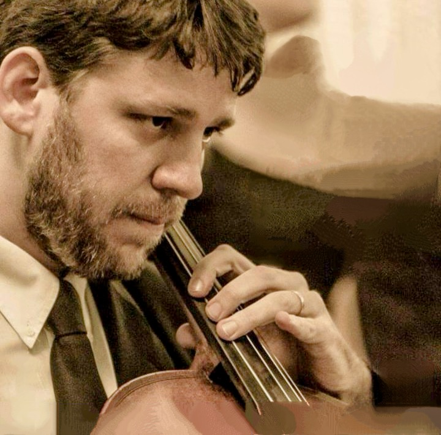

Biography

He is the founder and director of ReBrincando - Arte diversão, where he has worked for 10 years. He is a highly qualified professional: multi-instrumentalist, producer, composer, arranger, cultural educator, teacher, and on the personal side, father of dear Enzo, 13 years old. He studied at EMESP, Arts Foundation of São Caetano do Sul (Brazil) and has a Bachelor's Degree in Cello from FAAM (Alcantara Machado College).